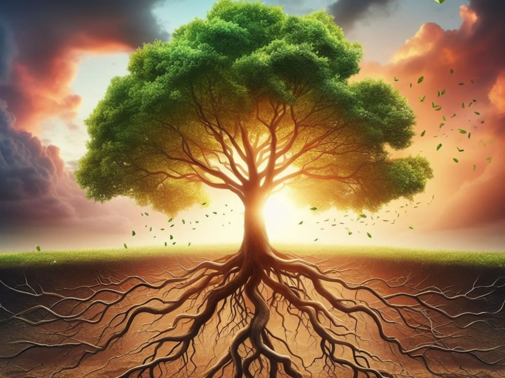
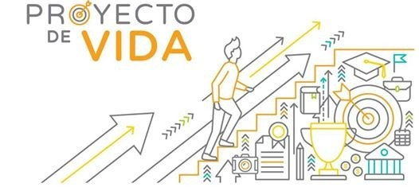

Un proyecto de vida es un plan personal a largo o mediano plazo que se piensa seguir a lo largo de los años. Se diseña con el fin de cumplir determinados objetivos o metas concretas y se basa en gustos personales, valores o habilidades. Muchas personas fijan su proyecto de vida en base a una carrera universitaria, un trabajo, una pareja o formar una familia.
Suele empezar a pensarse en un proyecto de vida cuando se alcanza cierta madurez, sobre todo después de los 20 años: cuando la persona puede definir qué le gusta, qué le disgusta, qué la motiva o desafía. La búsqueda del proyecto de vida es un proceso que se da durante toda la vida y puede variar según los objetivos o necesidades de cada persona. Es indispensable que el proyecto y los objetivos propuestos se basen en lo que cada individuo verdaderamente es y lo que quiere transmitir al mundo. La búsqueda de un proyecto personal implica esfuerzo y autoconocimiento; supone plantear objetivos que lleven a la acción y hacer todo lo que está al alcance para cumplirlos.
Define objetivos y metas claras para tomar decisiones acertadas.
Devela y deja asentado aquello que la persona quiere para su vida.
Busca el desarrollo del autoconocimiento y autogestión.
Acerca herramientas para lograr las metas personales.
Permite descubrir gustos personales, valores y habilidades.
Alinea las decisiones del individuo con su verdadero ser.
Permite visualizar un futuro. ¿Cómo quiero ser? ¿Dónde quiero estar? ¿Con quién?
1. Autoconocimiento
2. Revisar proyectos
3. Plantear objetivos y metas propias
4. Pasar a la acción
